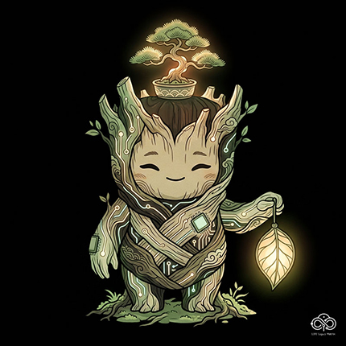
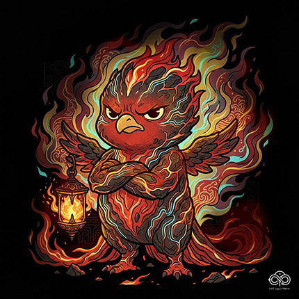
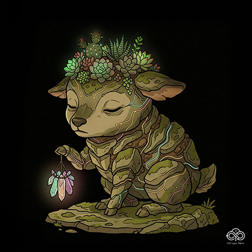
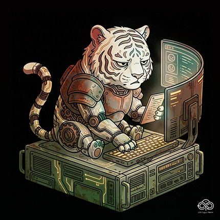
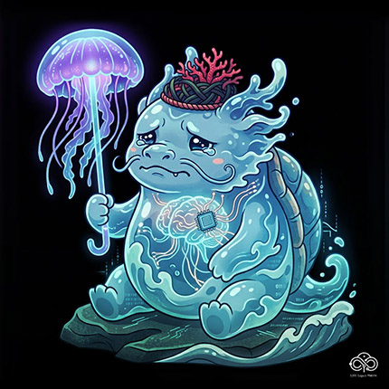

大腦記憶內修復體檢測
LIFE+ Legacy Matrix System
請輸入您的代號與出生時間。
LIFE 系統將以此解碼您基因中的陰陽五行干支矩陣，並診斷高壓環境下您的大腦記憶內修復體狀態。
您的名字 // 大腦修復體報告
載入中...
Type: INITIALIZING
生辰五行氣場 // ENERGY MATRIX
| 時柱 | 日柱 | 月柱 | 年柱 |
|---|---|---|---|
| -- | -- | -- | -- |
| -- | -- | -- | -- |
大腦危機診斷 // STATUS
載入中...
內在療癒處方 // RECOVERY
載入中...
⚡ 精神天敵 (剋星)
--
🤝 靈魂共生 (好友)
--
總表展開中 // DECODING LOG
DECODING LOG // 記憶脈絡解析
大腦記憶內修復體 // 五行能量脈絡總表
此總表供對照其他基因時間座標。高亮區塊為您本次的定錨屬性。
CODE: WOOD_CORE

社交救火仙姑 // 俠客
木核偏向 (Wood)
高壓大腦危機
白天把正能量都燒給別人，回到家卻是一具連外賣都懶得拆的廢棄人偶。海馬迴被「過度責任感」超載磨損，面臨集體斷電風險。
內在療癒處方
大腦需要「物理隔離」。立刻停止接收他人的精神垃圾，每天留出 1
小時完全不與人溝通的「空白時間」來修復神經脈絡。
CODE: FIRE_CORE

瞬間斷片灶神 // 祝融
火核偏向 (Fire)
高壓大腦危機
辦事全憑第一直覺。最近嚴重懷疑自己得了健忘症，上一秒拿鑰匙、下一秒找鑰匙，短期記憶區正因為環境高壓面臨經常性格式化。
內在療癒處方
最需要的是「大腦排毒與燃料補充」。刻意遠離高工時壓榨環境，多與高能量、正向思維的人群相處，讓海馬迴稍微恢復機能。
CODE: EARTH_CORE

孤獨硬撐土地婆 // 公
土核偏向 (Fire)
高壓大腦危機
習慣沒有人陪伴，所以把所有能量都聚焦在工作和自律上。大腦防禦牆長期過載，海馬迴因為習慣「一個人硬撐」而陷入憂鬱與慢性疲勞。
內在療癒處方
需要建立「外在的安全感與連結」。目前的你財務無虞，請停止無止盡的自我鞭策，容許生活出現預料之外的留白與社交。
CODE: MATEL_CORE

完美主義判官娘 // 包公
金核偏向 (Fire)
高壓大腦危機
害怕做錯事，所以進場或決策前反覆考慮，時常錯過最佳時機。對完美主義的執著，讓大腦的運算核心天天超載內耗，睡眠障礙隨之而來。
內在療癒處方
需要「容許殘缺與臣服當下」。不完美的進場，勝過完美的等待；不完美的記錄，勝過完美的遺忘。試著放手讓核心休息。
CODE: WATER_CORE

邊界模糊龍王女 // 水怪
水核偏向 (Fire)
高壓大腦危機
天生自帶高同理心，一走進房間就能吸收所有人散發的焦慮。邊界太模糊，大腦海馬迴嚴重超載，記憶與自我定位被悄悄磨滅。
內在療癒處方
需要強效的「心理除濕與邊界建立」。明確拒絕不屬於自身目的之工作與情緒垃圾，拿回生活作息的絕對掌控權，清除大腦內耗物。
想了解更多將生命記憶轉化為數位或實體藝術資產方案，請前往 LIFE 主艙體。
啟動 LIFE 核心定錨體驗艙 ↗